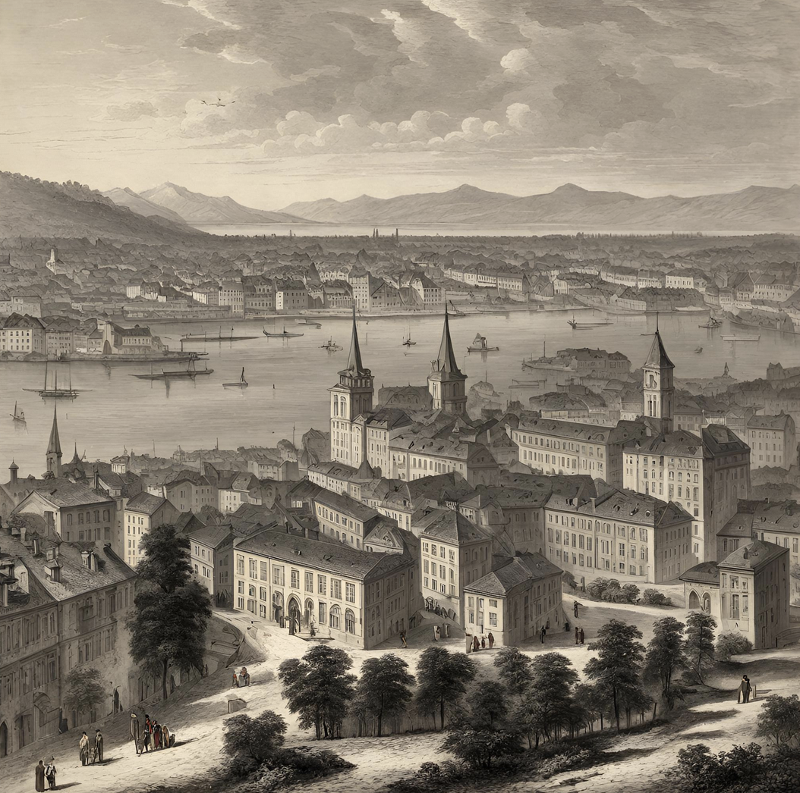
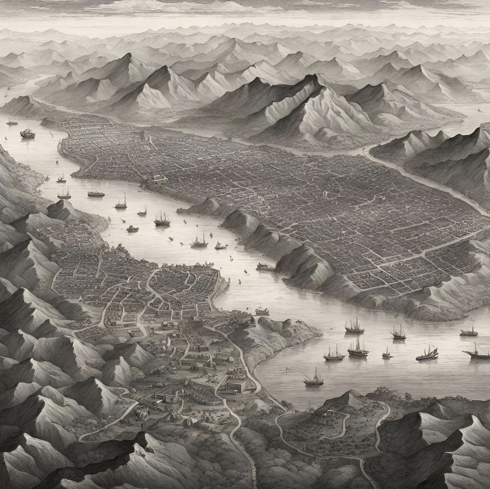
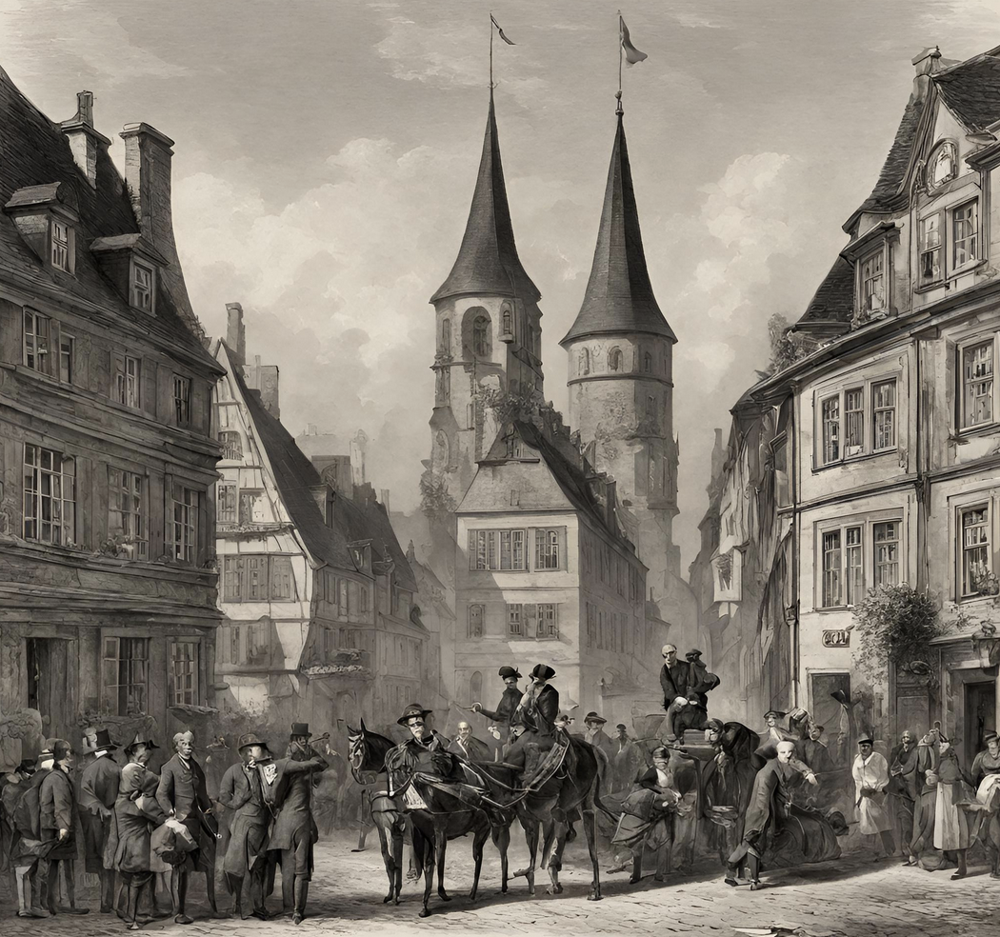
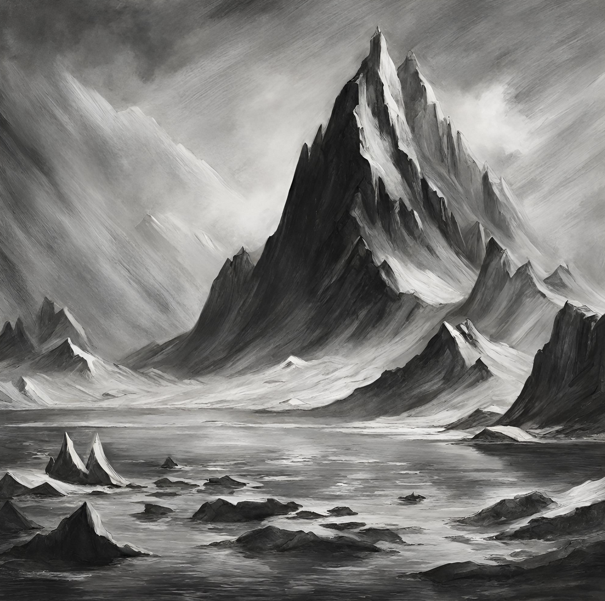

Travel
Switzerland:
Swiss Alps, sound great don’t they, with them, you can escape your busy lives for weeks and take a calm repose, a break from everything. You could take a stroll or even climb the alps if you want. If you want a different style of break, you could go to the numerous towns we have, all active but a great break from the busy urban life. The air here is fresher and the skies brighter. Go Swiss, Stay Positive.
South America:
Want to try an exotic new place. It is far away, secluded away from the rest of humanity because there are thought to be no humans there. It's a new experience to go with your new c ompanion/partner, Many people would kill to be able to got to South America.
Germany:
German Cottage life is wonderful, isn’t it. The ability to see something new at a slower pace away from home. To have your own cottage as well as a garden to grow your own food. That’s why you want to go to the German countryside.
Arctic:
For glory, there is the Arctic, If you reach the top of the Arctic, you would be the first to do so and your name would live on forever, immortal throughout time. It would be a tough and expensive journey, but is very much worth the trip due to the winter wonderland it is.